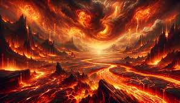
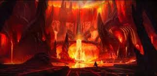
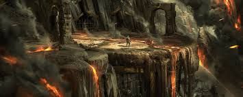
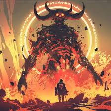
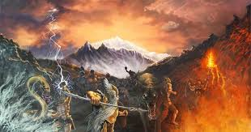

Muspelheim
Reino de fuego y calor:
Muspelheim es un mundo abrasador, lleno de fuego, lava, humo y un calor insoportable. Simboliza las fuerzas destructivas y creativas del fuego, capaz de dar vida o consumirla.
Gobernante: Surtr:
Surtr es el guardián y señor de Muspelheim, un gigante de fuego poderoso y temido. Durante Ragnarök, Surtr liderará a las fuerzas de Muspelheim contra los dioses y quemará el mundo con su espada de fuego.
Rol en la creación del cosmos:
Muspelheim, junto con Niflheim (el reino del hielo), desempeñó un papel crucial en la creación del universo. En el vacío primordial de Ginnungagap, el calor de Muspelheim y el frío de Niflheim se encontraron, dando lugar al derretimiento del hielo y la formación del gigante Ymir y la vaca primordial Auðumbla.
Paisaje y entorno:
Muspelheim es un lugar desolado e inhóspito, dominado por volcanes, ríos de lava y llamas eternas. Es el opuesto de los mundos fríos y oscuros como Niflheim.
Relación con los otros mundos:
Muspelheim está conectado con el Árbol del Mundo, Yggdrasil, aunque su ubicación exacta es incierta. Se suele colocar en los niveles inferiores, simbolizando su naturaleza primordial y destructiva. Se dice que sus llamas son tan intensas que ningún ser puede entrar o sobrevivir allí, excepto los habitantes de Muspelheim.
Ragnarök:
Durante el apocalipsis nórdico, los gigantes de fuego, liderados por Surtr, cruzarán el puente Bifröst, que se romperá bajo su peso. Surtr usará su espada flamígera para quemar el mundo, marcando el final de la era actual y el inicio de una nueva.
Simbolismo
Fuego primordial: Representa las fuerzas elementales y descontroladas que existen antes y después del cosmos. Destrucción y renovación: Simboliza el ciclo eterno de destrucción que lleva al renacimiento. Caos y poder: Es un recordatorio de que el fuego, aunque caótico, es esencial para la vida y el cambio.